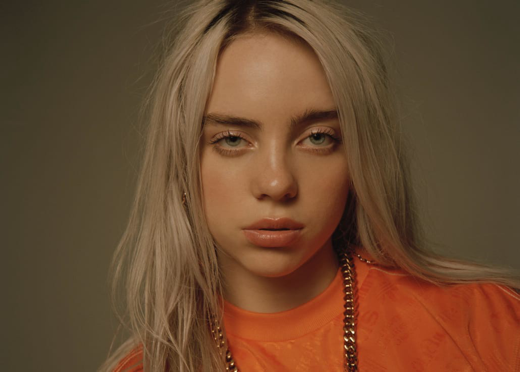
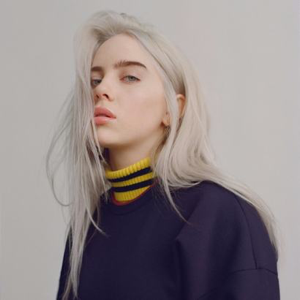

Billie Eilish Pirate Baird O'Connell(/ˈaɪlɪʃ/; born December 18, 2001) is an American singer and songwriter. She gained a following in 2016 when she released her debut single "Ocean Eyes" on audio distribution platform SoundCloud. She caught the attention of record labels Darkroom and Interscope Records, and subsequently rereleased "Ocean Eyes".
Her debut EP, Don't Smile at Me (2017), reached the top 15 in the United States, United Kingdom, Canada and Australia, and spawned the single "Bellyache". Eilish also collaborated with American singer Khalid for the single "Lovely", which was released in April 2018 and added to the soundtrack for the second season of 13 Reasons Why.[5] Her debut studio album, When We All Fall Asleep, Where Do We Go? (2019) debuted atop the Billboard 200 and reached number one in the United Kingdom, Canada and Australia. The album featured four.
US top-40 singles: "When the Party's Over", "Bury a Friend", "Wish You Were Gay", and "Bad Guy".
Through the RIAA, Eilish has seven gold and two platinum singles.[6] Eilish and her musician brother Finneas collaborate on her music.
Avery Stone of Noisey described Eilish's soprano vocals as "ethereal",[48] and Maura Johnston of Rolling Stone characterized them as "whispery".[49] Doreen St. Félix of The New Yorker opined that she has a "husky, slurring voice that she can thin out to reedy".[50]
Eilish and her brother Finneas collaborate on songwriting.[51][52] Eilish called Finneas her partner in making music.[51] He produces her music and also performs with her on live shows.[53][51] Eilish and Finneas "like to completely make up things and become characters" and "have songs that are really fictional".[52] Eilish said a number of the songs also derive from her and Finneas' experiences.[52] They try to write "really interesting and conversational" lyrics: "We try to say stuff that doesn't have to be that deep [...] but you say something way deeper in a certain way that makes sense, but you haven't really thought about."[52]
Finneas has stated when he writes songs for his sister, he aims to "write [songs] that I think she'll relate to and enjoy singing and empathise with the lyrics and make her own".[54] When he writes with Eilish, he tries "to help her tell whatever story she's trying to tell, bounce ideas off of her, listen to her ideas", and use a language that fits her voice telling the story.[54]
Eilish has cited Lana Del Rey as a major influence on her music.[51] Eilish is also inspired by hip hop and R&B artists.[52] She grew up listening to the Beatles, Green Day, Avril Lavigne, and Justin Bieber.[52][55]
 In April 2019, Eilish released clothing in collaboration with Takashi Murakami,[60][61] inspired by her music video for "You Should See Me in a Crown", also directed and animated by Murakami, as well as a limited edition vinyl figure of herself from the video.[62] Eilish also collaborated with Adobe Creative Cloud the same month for a series of advertisements[63][64] as well as a social media art contest, where users would submit artwork with the hashtag "#BILLIExADOBE".[65][66] Eilish appeared in the debut of Calvin Klein's "I Speak My Truth In #MyCalvins" ad campaign in May 2019,[67][68] as well as the Ad Council's "Seize the Awkward" campaign, a series of PSAs targeting mental health awareness.[69][70] She fronted MCM Worldwide's fall 2019 advertising campaign in July 2019,[71] and later that month, collaborated with Los Angeles-based clothing brand Freak City for a clothing line.[72][73][74] Also in July 2019, she performed at a dinner hosted by Chanel on Shelter Island to celebrate the brand's pop-up yacht club.[75][76] In August 2019, Billie Eilish partnered with Apple to allow Apple Store customers to experiment with her song "You Should See Me in a Crown" in Music Lab sessions in its stores.[77] Eilish's collaboration with the clothing company Siberia Hills[78][79] was met with controversy after it was revealed that the company had used plagiarized designs of fan art of the character Nozomi Tojo from Love Live!, drawn by artist Makoto Kurokawa, for Eilish's clothing line.[80] The brand later clarified that Eilish herself had no knowledge of the plagiarism.[81][82]